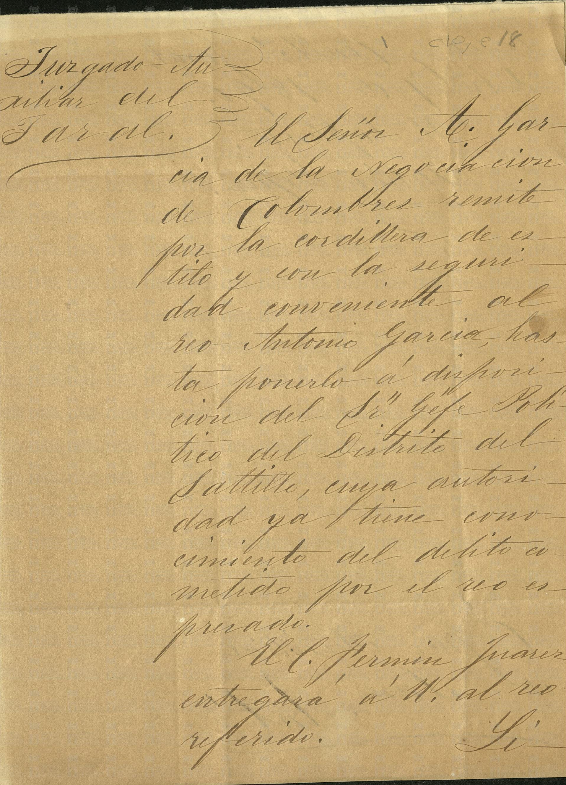

No se funde con el Antonio de 11 años del censo 1930 ni, sin más papel, con José Antonio de 1787. Se guarda porque el apellido y el distrito son los de la casa.

Juzgado Auxiliar del Jaral.
El Señor Jefe de la Seguridad de Colombres remite por la cordillera de estilo y con la seguridad conveniente al reo Antonio García, hasta ponerlo a disposición del Sr. Jefe Político del Distrito de Saltillo, cuya autoridad ya tiene conocimiento del delito cometido por el reo expresado.
El C. Fermín Juárez entregará a U. al reo referido.
Volver